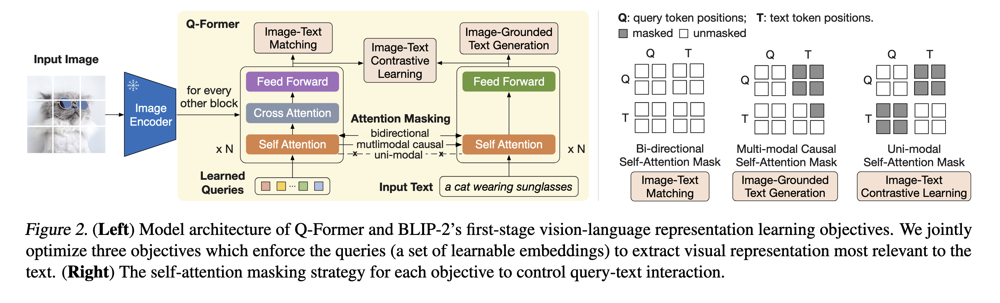

[Paper Note] BLIP-2: Bootstrapping Language-Image Pre-training with Frozen Image Encoders and Large Language Models
BLIP-2: Bootstrapping Language-Image Pre-training with Frozen Image Encoders and Large Language Models
Vision-Language Pre-training
Given the existence of powerful language models (LLMs) and image encoders, a natural progression is to integrate them.
To prevent catastrophic forgetting, LLMs are often frozen, which can make training difficult.
- Flamingo uses an image-to-text generation loss, which is often insufficient to bridge the modality gap effectively.
- To achieve effective vision-language alignment with frozen unimodal models, we propose a Querying Transformer (QFormer) pre-trained with a new two-stage pre-training strategy.
- This module is designed to select important information from images to feed into the LLM.
- The advantage is that it uses fewer trainable parameters, leading to greater efficiency.
Method
The training is divided into two stages:
- Vision-language representation learning stage
- Vision-to-language generative learning stage

Q-Former Architecture
- The model features two Transformer networks, each with N layers. One processes images, and the other processes text.
- The image model’s input consists of 32 embedding as query tokens. These queries extract information from image tokens via cross-attention, which is inserted every other layer.
- The image branch and text branch share the same self-attention layers. However, the text branch does not have cross-attention, and the feed-forward network (FFN) parameters differ between the two branches.
- The model parameters are initialized using
bert-base.
This bottleneck architecture, combined with our pre-training objectives, forces the queries to extract visual information most relevant to the text.
Three Training Objectives
The model is optimized simultaneously using three training objectives:
-
Image-Text Contrastive Learning: Similar to CLIP, this objective maximizes the similarity of positive image-text pairs.
- The
[CLS] token is selected as the text embedding.
- An image token with the highest similarity to the text embedding is chosen as the image embedding.
- During self-attention, the two modalities cannot attend to each other.
-
Image-grounded Text Generation: This involves the auto-regressive loss for the text branch.
- The
[CLS] token is replaced with a new [DEC] token as the first text token to signal the decoding task.
- Query tokens are prevented from attending to text tokens.
-
Image-Text Matching
- Each output query embedding is fed into a two-class linear classifier to obtain a logit. These logits are then averaged across all queries to produce the output matching score.
- It is a binary classification task where the model is asked to predict whether an image-text pair is matched or unmatched.
We remove the last layer of the Vision Transformer (ViT) and use the output features from the second-to-last layer, which leads to slightly better performance.
references
-
OFA: Unifying Architectures, Tasks, and Modalities Through a Simple Sequence-to-Sequence Learning Framework
-
Flamingo: a Visual Language Model for Few-Shot Learning
-
Align before fuse: Vision and language representation learning with momentum distillation.
-
BLIP: bootstrapping language-image pre-training for unified visionlanguage understanding and generation.